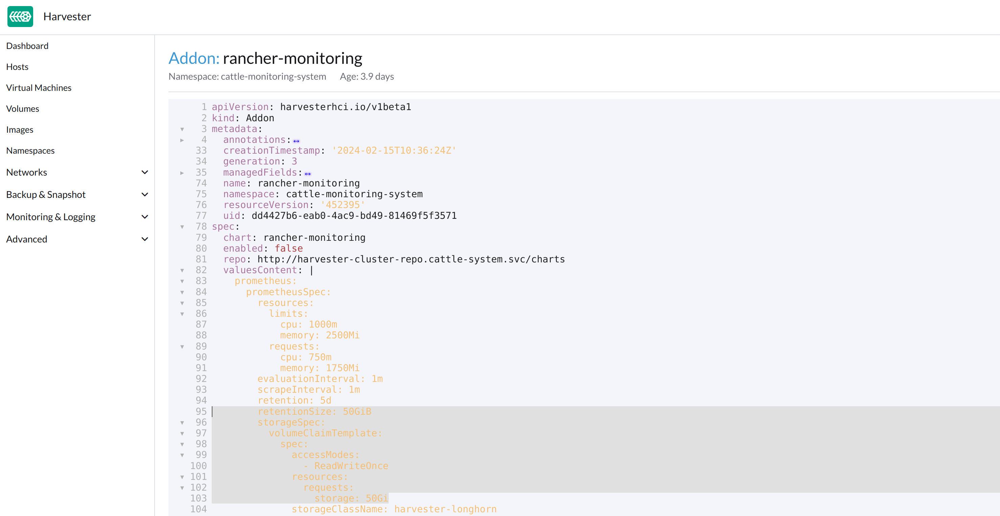

Monitoring Issues
Monitoring is unusable
When the Dashboard is not showing any monitoring metrics, it can be caused by the following reasons.
Monitoring is unusable due to Pod being stuck in Terminating status
Harvester Monitoring pods are deployed randomly on the cluster Nodes. When the Node hosting the pods accidentally goes down, the related pods may become stuck in the Terminating status rendering the Monitoring unusable from the WebUI.
$ kubectl get pods -n cattle-monitoring-system
NAMESPACE NAME READY STATUS RESTARTS AGE
cattle-monitoring-system prometheus-rancher-monitoring-prometheus-0 3/3 Terminating 0 3d23h
cattle-monitoring-system rancher-monitoring-admission-create-fwjn9 0/1 Terminating 0 137m
cattle-monitoring-system rancher-monitoring-crd-create-9wtzf 0/1 Terminating 0 137m
cattle-monitoring-system rancher-monitoring-grafana-d9c56d79b-ph4nz 3/3 Terminating 0 3d23h
cattle-monitoring-system rancher-monitoring-grafana-d9c56d79b-t24sz 0/3 Init:0/2 0 132m
cattle-monitoring-system rancher-monitoring-kube-state-metrics-5bc8bb48bd-nbd92 1/1 Running 4 4d1h
...Monitoring can be recovered using CLI commands to force delete the related pods. The cluster will redeploy new pods to replace them.
# Delete each none-running Pod in namespace cattle-monitoring-system.
$ kubectl delete pod --force -n cattle-monitoring-system prometheus-rancher-monitoring-prometheus-0
pod "prometheus-rancher-monitoring-prometheus-0" force deleted
$ kubectl delete pod --force -n cattle-monitoring-system rancher-monitoring-admission-create-fwjn9
$ kubectl delete pod --force -n cattle-monitoring-system rancher-monitoring-crd-create-9wtzf
$ kubectl delete pod --force -n cattle-monitoring-system rancher-monitoring-grafana-d9c56d79b-ph4nz
$ kubectl delete pod --force -n cattle-monitoring-system rancher-monitoring-grafana-d9c56d79b-t24szWait for a few minutes so that the new pods are created and readied for the Monitoring dashboard to be usable again.
$ kubectl get pods -n cattle-monitoring-system
NAME READY STATUS RESTARTS AGE
prometheus-rancher-monitoring-prometheus-0 0/3 Init:0/1 0 98s
rancher-monitoring-grafana-d9c56d79b-cp86w 0/3 Init:0/2 0 27s
...
$ kubectl get pods -n cattle-monitoring-system
NAME READY STATUS RESTARTS AGE
prometheus-rancher-monitoring-prometheus-0 3/3 Running 0 7m57s
rancher-monitoring-grafana-d9c56d79b-cp86w 3/3 Running 0 6m46s
...Expand PV/Volume Size
Harvester integrates Longhorn as the default storage provider.
Harvester Monitoring uses Persistent Volume (PV) to store running data. When a cluster has been running for a certain time, the Persistent Volume may need to expand its size.
Based on the Longhorn Volume expansion guide, Harvester illustrates how to expand the volume size.
View Volume
From Embedded Longhorn WebUI
Access the embedded Longhorn WebUI according to this document.
The Longhorn dashboard default view.

Click Volume to list all existing volumes.

From CLI
You can also use kubectl to get all Volumes.
# kubectl get pvc -A NAMESPACE NAME STATUS VOLUME CAPACITY ACCESS MODES STORAGECLASS AGE cattle-monitoring-system alertmanager-rancher-monitoring-alertmanager-db-alertmanager-rancher-monitoring-alertmanager-0 Bound pvc-1b2fbbe9-14b1-4a65-941a-7d5645a89977 5Gi RWO harvester-longhorn 43h cattle-monitoring-system prometheus-rancher-monitoring-prometheus-db-prometheus-rancher-monitoring-prometheus-0 Bound pvc-7c6dcb61-51a9-4a38-b4c5-acaa11788978 50Gi RWO harvester-longhorn 43h cattle-monitoring-system rancher-monitoring-grafana Bound pvc-b2b2c07c-f7cd-4965-90e6-ac3319597bf7 2Gi RWO harvester-longhorn 43h # kubectl get volume -A NAMESPACE NAME STATE ROBUSTNESS SCHEDULED SIZE NODE AGE longhorn-system pvc-1b2fbbe9-14b1-4a65-941a-7d5645a89977 attached degraded 5368709120 harv31 43h longhorn-system pvc-7c6dcb61-51a9-4a38-b4c5-acaa11788978 attached degraded 53687091200 harv31 43h longhorn-system pvc-b2b2c07c-f7cd-4965-90e6-ac3319597bf7 attached degraded 2147483648 harv31 43h
Scale Down a Deployment
To detach the Volume, you need to scale down the deployment that uses the Volume.
The example below is against the PVC claimed by rancher-monitoring-grafana.
Find the deployment in the namespace cattle-monitoring-system.
# kubectl get deployment -n cattle-monitoring-system NAME READY UP-TO-DATE AVAILABLE AGE rancher-monitoring-grafana 1/1 1 1 43h // target deployment rancher-monitoring-kube-state-metrics 1/1 1 1 43h rancher-monitoring-operator 1/1 1 1 43h rancher-monitoring-prometheus-adapter 1/1 1 1 43h
Scale down the deployment rancher-monitoring-grafana to 0.
# kubectl scale --replicas=0 deployment/rancher-monitoring-grafana -n cattle-monitoring-system
Check the deployment and the volume.
# kubectl get deployment -n cattle-monitoring-system NAME READY UP-TO-DATE AVAILABLE AGE rancher-monitoring-grafana 0/0 0 0 43h // scaled down rancher-monitoring-kube-state-metrics 1/1 1 1 43h rancher-monitoring-operator 1/1 1 1 43h rancher-monitoring-prometheus-adapter 1/1 1 1 43h # kubectl get volume -A NAMESPACE NAME STATE ROBUSTNESS SCHEDULED SIZE NODE AGE longhorn-system pvc-1b2fbbe9-14b1-4a65-941a-7d5645a89977 attached degraded 5368709120 harv31 43h longhorn-system pvc-7c6dcb61-51a9-4a38-b4c5-acaa11788978 attached degraded 53687091200 harv31 43h longhorn-system pvc-b2b2c07c-f7cd-4965-90e6-ac3319597bf7 detached unknown 2147483648 43h // volume is detached
Expand Volume
In the Longhorn WebUI, the related volume becomes Detached. Click the icon in the Operation column, and select Expand Volume.
Input a new size, and Longhorn will expand the volume to this size.
Scale Up a Deployment
After the Volume is expanded to target size, you need to scale up the aforementioned deployment to its original replicas. For the above example of rancher-monitoring-grafana, the original replicas is 1.
# kubectl scale --replicas=1 deployment/rancher-monitoring-grafana -n cattle-monitoring-system
Check the deployment again.
# kubectl get deployment -n cattle-monitoring-system NAME READY UP-TO-DATE AVAILABLE AGE rancher-monitoring-grafana 1/1 1 1 43h // scaled up rancher-monitoring-kube-state-metrics 1/1 1 1 43h rancher-monitoring-operator 1/1 1 1 43h rancher-monitoring-prometheus-adapter 1/1 1 1 43h
The Volume is attached to the new POD.

To now, the Volume is expanded to the new size and the POD is using it smoothly.
Fail to Enable rancher-monitoring Addon
You may encounter this when you install the Harvester v1.3.0 or higher version cluster with the minimal 250 GB disk per hardware requirements.
Reproduce Steps
-
Install the Harvester v1.3.0 cluster.
-
Enable the
rancher-monitoringaddon, you will observe:-
The POD
prometheus-rancher-monitoring-prometheus-0incattle-monitoring-systemnamespace fails to start due to PVC attached failed.$ kubectl get pods -n cattle-monitoring-system NAME READY STATUS RESTARTS AGE alertmanager-rancher-monitoring-alertmanager-0 2/2 Running 0 3m22s helm-install-rancher-monitoring-4b5mx 0/1 Completed 0 3m41s prometheus-rancher-monitoring-prometheus-0 0/3 Init:0/1 0 3m21s // stuck in this status rancher-monitoring-grafana-d6f466988-hgpkb 4/4 Running 0 3m26s rancher-monitoring-kube-state-metrics-7659b76cc4-66sr7 1/1 Running 0 3m26s rancher-monitoring-operator-595476bc84-7hdxj 1/1 Running 0 3m25s rancher-monitoring-prometheus-adapter-55dc9ccd5d-pcrpk 1/1 Running 0 3m26s rancher-monitoring-prometheus-node-exporter-pbzv4 1/1 Running 0 3m26s $ kubectl describe pod -n cattle-monitoring-system prometheus-rancher-monitoring-prometheus-0 Name: prometheus-rancher-monitoring-prometheus-0 Namespace: cattle-monitoring-system Priority: 0 Service Account: rancher-monitoring-prometheus ... Events: Type Reason Age From Message ---- ------ ---- ---- ------- Warning FailedScheduling 3m48s (x3 over 4m15s) default-scheduler 0/1 nodes are available: pod has unbound immediate PersistentVolumeClaims. preemption: 0/1 nodes are available: 1 Preemption is not helpful for scheduling.. Normal Scheduled 3m44s default-scheduler Successfully assigned cattle-monitoring-system/prometheus-rancher-monitoring-prometheus-0 to harv41 Warning FailedMount 101s kubelet Unable to attach or mount volumes: unmounted volumes=[prometheus-rancher-monitoring-prometheus-db], unattached volumes=[prometheus-rancher-monitoring-prometheus-db], failed to process volumes=[]: timed out waiting for the condition Warning FailedAttachVolume 90s (x9 over 3m42s) attachdetach-controller AttachVolume.Attach failed for volume "pvc-bbe8760d-926c-484a-851c-b8ec29ae05c0" : rpc error: code = Aborted desc = volume pvc-bbe8760d-926c-484a-851c-b8ec29ae05c0 is not ready for workloads $ kubectl get pvc -A NAMESPACE NAME STATUS VOLUME CAPACITY ACCESS MODES STORAGECLASS AGE cattle-monitoring-system prometheus-rancher-monitoring-prometheus-db-prometheus-rancher-monitoring-prometheus-0 Bound pvc-bbe8760d-926c-484a-851c-b8ec29ae05c0 50Gi RWO harvester-longhorn 7m12s $ kubectl get volume -A NAMESPACE NAME DATA ENGINE STATE ROBUSTNESS SCHEDULED SIZE NODE AGE longhorn-system pvc-bbe8760d-926c-484a-851c-b8ec29ae05c0 v1 detached unknown 53687091200 6m55s -
The Longhorn manager is unable to schedule the replica.
$ kubectl logs -n longhorn-system longhorn-manager-bf65b | grep "pvc-bbe8760d-926c-484a-851c-b8ec29ae05c0" time="2024-02-19T10:12:56Z" level=error msg="There's no available disk for replica pvc-bbe8760d-926c-484a-851c-b8ec29ae05c0-r-dcb129fd, size 53687091200" func="schedule r.(*ReplicaScheduler).ScheduleReplica" file="replica_scheduler.go:95" time="2024-02-19T10:12:56Z" level=warning msg="Failed to schedule replica" func="controller.(*VolumeController).reconcileVolumeCondition" file="volume_controller.go:169 4" accessMode=rwo controller=longhorn-volume frontend=blockdev migratable=false node=harv41 owner=harv41 replica=pvc-bbe8760d-926c-484a-851c-b8ec29ae05c0-r-dcb129fd sta te= volume=pvc-bbe8760d-926c-484a-851c-b8ec29ae05c0 ...
-
Workaround
-
Disable the
rancher-monitoringaddon if you have alreay enabled it.All pods in
cattle-monitoring-systemare deleted but the PVCs are retained. For more information, see [Addons].$ kubectl get pods -n cattle-monitoring-system No resources found in cattle-monitoring-system namespace. $ kubectl get pvc -n cattle-monitoring-system NAME STATUS VOLUME CAPACITY ACCESS MODES STORAGECLASS AGE alertmanager-rancher-monitoring-alertmanager-db-alertmanager-rancher-monitoring-alertmanager-0 Bound pvc-cea6316e-f74f-4771-870b-49edb5442819 5Gi RWO harvester-longhorn 14m prometheus-rancher-monitoring-prometheus-db-prometheus-rancher-monitoring-prometheus-0 Bound pvc-bbe8760d-926c-484a-851c-b8ec29ae05c0 50Gi RWO harvester-longhorn 14m
-
Delete the PVC named
prometheus, but retain the PVC namedalertmanager.$ kubectl delete pvc -n cattle-monitoring-system prometheus-rancher-monitoring-prometheus-db-prometheus-rancher-monitoring-prometheus-0 persistentvolumeclaim "prometheus-rancher-monitoring-prometheus-db-prometheus-rancher-monitoring-prometheus-0" deleted $ kubectl get pvc -n cattle-monitoring-system NAME STATUS VOLUME CAPACITY ACCESS MODES STORAGECLASS AGE alertmanager-rancher-monitoring-alertmanager-db-alertmanager-rancher-monitoring-alertmanager-0 Bound pvc-cea6316e-f74f-4771-870b-49edb5442819 5Gi RWO harvester-longhorn 16m
-
On the Addons screen of the Harvester UI, select ⋮ (menu icon) and then select Edit YAML.

-
As indicated below, change the two occurrences of the number
50to30under prometheusSpec, and then save. Theprometheusfeature will use a 30GiB disk to store data.Alternatively, you can use
kubectlto edit the object.kubectl edit addons.harvesterhci.io -n cattle-monitoring-system rancher-monitoringretentionSize: 50GiB // Change 50 to 30 storageSpec: volumeClaimTemplate: spec: accessModes: - ReadWriteOnce resources: requests: storage: 50Gi // Change 50 to 30 storageClassName: harvester-longhorn -
Enable the
rancher-monitoringaddon and wait for a few minutes.. -
All pods are successfully deployed, and the
rancher-monitoringfeature is available.$ kubectl get pods -n cattle-monitoring-system NAME READY STATUS RESTARTS AGE alertmanager-rancher-monitoring-alertmanager-0 2/2 Running 0 3m52s helm-install-rancher-monitoring-s55tq 0/1 Completed 0 4m17s prometheus-rancher-monitoring-prometheus-0 3/3 Running 0 3m51s rancher-monitoring-grafana-d6f466988-hkv6f 4/4 Running 0 3m55s rancher-monitoring-kube-state-metrics-7659b76cc4-ght8x 1/1 Running 0 3m55s rancher-monitoring-operator-595476bc84-r96bp 1/1 Running 0 3m55s rancher-monitoring-prometheus-adapter-55dc9ccd5d-vtssc 1/1 Running 0 3m55s rancher-monitoring-prometheus-node-exporter-lgb88 1/1 Running 0 3m55s
rancher-monitoring-crd ManagedChart State is Modified
Issue Description
In certain situations, the state of the rancher-monitoring-crd ManagedChart object changes to Modified (with the message ...rancher-monitoring-crd-manager missing...).
Example:
$ kubectl get managedchart rancher-monitoring-crd -n fleet-local -o yaml
apiVersion: management.cattle.io/v3
kind: ManagedChart
...
spec:
chart: rancher-monitoring-crd
defaultNamespace: cattle-monitoring-system
paused: false
releaseName: rancher-monitoring-crd
repoName: harvester-charts
targets:
- clusterName: local
clusterSelector:
matchExpressions:
- key: provisioning.cattle.io/unmanaged-system-agent
operator: DoesNotExist
version: 102.0.0+up40.1.2
...
status:
conditions:
- lastUpdateTime: "2024-02-22T14:03:11Z"
message: Modified(1) [Cluster fleet-local/local]; clusterrole.rbac.authorization.k8s.io
rancher-monitoring-crd-manager missing; clusterrolebinding.rbac.authorization.k8s.io
rancher-monitoring-crd-manager missing; configmap.v1 cattle-monitoring-system/rancher-monitoring-crd-manifest
missing; serviceaccount.v1 cattle-monitoring-system/rancher-monitoring-crd-manager
missing
status: "False"
type: Ready
- lastUpdateTime: "2024-02-22T14:03:11Z"
status: "True"
type: Processed
- lastUpdateTime: "2024-04-02T07:45:26Z"
status: "True"
type: Defined
display:
readyClusters: 0/1
state: Modified
...
The ManagedChart object has a downstream object named Bundle, which has similar information.
Example:
$ kubectl get bundles -A NAMESPACE NAME BUNDLEDEPLOYMENTS-READY STATUS fleet-local fleet-agent-local 1/1 fleet-local local-managed-system-agent 1/1 fleet-local mcc-harvester 1/1 fleet-local mcc-harvester-crd 1/1 fleet-local mcc-local-managed-system-upgrade-controller 1/1 fleet-local mcc-rancher-logging-crd 1/1 fleet-local mcc-rancher-monitoring-crd 0/1 Modified(1) [Cluster fleet-local/local]; clusterrole.rbac.authorization.k8s.io rancher-monitoring-crd-manager missing; clusterrolebinding.rbac.authorization.k8s.io rancher-monitoring-crd-manager missing; configmap.v1 cattle-monitoring-system/rancher-monitoring-crd-manifest missing; serviceaccount.v1 cattle-monitoring-system/rancher-monitoring-crd-manager missing
When the issue exists and you start an upgrade, Harvester may return the following error message: admission webhook "validator.harvesterhci.io" denied the request: managed chart rancher-monitoring-crd is not ready, please wait for it to be ready.
Also, when you search for the objects marked as missing, you will find that they exist in the cluster.
Example:
$ kubectl get clusterrole rancher-monitoring-crd-manager
apiVersion: rbac.authorization.k8s.io/v1
kind: ClusterRole
metadata:
annotations:
meta.helm.sh/release-name: rancher-monitoring-crd
meta.helm.sh/release-namespace: cattle-monitoring-system
creationTimestamp: "2023-01-09T11:04:33Z"
labels:
app: rancher-monitoring-crd-manager
app.kubernetes.io/managed-by: Helm
name: rancher-monitoring-crd-manager
...
rules:
- apiGroups:
- apiextensions.k8s.io
resources:
- customresourcedefinitions
verbs:
- create
- get
- patch
- delete
$ kubectl get clusterrolebinding rancher-monitoring-crd-manager
apiVersion: rbac.authorization.k8s.io/v1
kind: ClusterRoleBinding
metadata:
annotations:
meta.helm.sh/release-name: rancher-monitoring-crd
meta.helm.sh/release-namespace: cattle-monitoring-system
creationTimestamp: "2023-01-09T11:04:33Z"
labels:
app: rancher-monitoring-crd-manager
app.kubernetes.io/managed-by: Helm
name: rancher-monitoring-crd-manager
...
roleRef:
apiGroup: rbac.authorization.k8s.io
kind: ClusterRole
name: rancher-monitoring-crd-manager
subjects:
- kind: ServiceAccount
name: rancher-monitoring-crd-manager
namespace: cattle-monitoring-system
$ kubectl get configmap -n cattle-monitoring-system rancher-monitoring-crd-manifest
apiVersion: v1
data:
crd-manifest.tgz.b64: ...
kind: ConfigMap
metadata:
annotations:
meta.helm.sh/release-name: rancher-monitoring-crd
meta.helm.sh/release-namespace: cattle-monitoring-system
creationTimestamp: "2023-01-09T11:04:33Z"
labels:
app.kubernetes.io/managed-by: Helm
name: rancher-monitoring-crd-manifest
namespace: cattle-monitoring-system
...
$ kubectl get ServiceAccount -n cattle-monitoring-system rancher-monitoring-crd-manager
apiVersion: v1
kind: ServiceAccount
metadata:
annotations:
meta.helm.sh/release-name: rancher-monitoring-crd
meta.helm.sh/release-namespace: cattle-monitoring-system
creationTimestamp: "2023-01-09T11:04:33Z"
labels:
app: rancher-monitoring-crd-manager
app.kubernetes.io/managed-by: Helm
name: rancher-monitoring-crd-manager
namespace: cattle-monitoring-system
...Root Cause
The objects that are marked as missing do not have the related annotations and labels required by the ManagedChart object.
Example:
One of the manually recreated object:
apiVersion: rbac.authorization.k8s.io/v1
kind: ClusterRole
metadata:
annotations:
meta.helm.sh/release-name: rancher-monitoring-crd
meta.helm.sh/release-namespace: cattle-monitoring-system
objectset.rio.cattle.io/id: default-mcc-rancher-monitoring-crd-cattle-fleet-local-system # This required item is not in the above object.
creationTimestamp: "2024-04-03T10:23:55Z"
labels:
app: rancher-monitoring-crd-manager
app.kubernetes.io/managed-by: Helm
objectset.rio.cattle.io/hash: 2da503261617e9ea2da822d2da7cdcfccad847a9 # This required item is not in the above object.
name: rancher-monitoring-crd-manager
...
rules:
- apiGroups:
- apiextensions.k8s.io
resources:
- customresourcedefinitions
verbs:
- create
- get
- patch
- delete
- update
Workaround
-
Patch the ClusterRole object
rancher-monitoring-crd-managerto add theupdateoperation.$ cat > patchrules.yaml << EOF rules: - apiGroups: - apiextensions.k8s.io resources: - customresourcedefinitions verbs: - create - get - patch - delete - update EOF $ kubectl patch ClusterRole rancher-monitoring-crd-manager --patch-file ./patchrules.yaml --type merge $ rm ./patchrules.yaml
-
Patch the marked as
missingobjects to add the required annotations and labels.$ cat > patchhash.yaml << EOF metadata: annotations: objectset.rio.cattle.io/id: default-mcc-rancher-monitoring-crd-cattle-fleet-local-system labels: objectset.rio.cattle.io/hash: 2da503261617e9ea2da822d2da7cdcfccad847a9 EOF $ kubectl patch ClusterRole rancher-monitoring-crd-manager --patch-file ./patchhash.yaml --type merge $ kubectl patch ClusterRoleBinding rancher-monitoring-crd-manager --patch-file ./patchhash.yaml --type merge $ kubectl patch ServiceAccount rancher-monitoring-crd-manager -n cattle-monitoring-system --patch-file ./patchhash.yaml --type merge $ kubectl patch ConfigMap rancher-monitoring-crd-manifest -n cattle-monitoring-system --patch-file ./patchhash.yaml --type merge $ rm ./patchhash.yaml -
Check the
rancher-monitoring-crdManagedChart object.After a few seconds, the status of the
rancher-monitoring-crdManagedChart object changes toReady.$ kubectl get managedchart -n fleet-local rancher-monitoring-crd -oyaml apiVersion: management.cattle.io/v3 kind: ManagedChart metadata: ... name: rancher-monitoring-crd namespace: fleet-local ... status: conditions: - lastUpdateTime: "2024-04-22T21:41:44Z" status: "True" type: Ready ...Also, error indicators are no longer displayed for the downstream objects.
$ kubectl bundle -A NAMESPACE NAME BUNDLEDEPLOYMENTS-READY STATUS fleet-local fleet-agent-local 1/1 fleet-local local-managed-system-agent 1/1 fleet-local mcc-harvester 1/1 fleet-local mcc-harvester-crd 1/1 fleet-local mcc-local-managed-system-upgrade-controller 1/1 fleet-local mcc-rancher-logging-crd 1/1 fleet-local mcc-rancher-monitoring-crd 1/1
-
(Optional) Retry the upgrade (if previously unsuccessful because of this issue).